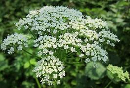

Basonym of Drug
Ajamoda
Main Synonym
- Kharashwa
- Mayuro
- Dipyaka
- Brhmakusha
- Karvi
Regional Name
- Hindi: Ajwain
- Bengali: Vanyamani, Randhuni, Ajamud
- Gujarati: Bodi ajamo, Ajamo
- Telugu: Vamaku, Vaamu
- Kannada: Ajamoda voma
- Tamil: Asham, Tagam, Ashamata togan
- English: Celery fruit, Apii fructus
Botanical Name
Apium graveolens Linn
Family
Umbelliferae
Classification (Gana)
- Aacharya Charak: Includes ajamoda in Deepaniya and Shoolaprashaman Mahakashaya.
- Aacharya Sushruta and Vagbhatta: Included in Pipplyadi Gana.
External Morphology
½ to 1-meter height herb
Useful Parts
Important Phytoconstituent
Rasa Panchak
- Rasa: Katu
- Guna: Tikshana
- Virya: Ushna
- Vipaka: Katu
Action
Kaphavatanashak (Balances Kapha and Vata doshas)
Therapeutic Indication
- Agni-deepen (Increase appetite)
- Hradya (Good for the heart)
- Vrushya (Aphrodisiac)
- Balya (Increases stamina)
Therapeutic Uses
- Joint swelling in osteoarthritis - Oil of ajamoda is applied to the affected area.
- Skin diseases - Oil is applied to the affected skin.
- Abdominal pain - Ajamoda seeds with rocksalt are beneficial.
- Respiratory problems - Ajwain leaves juice with honey is useful to treat cough and the common cold.
Dose
- Fruit powder: 1 - 4 grams
- Oil: External use
Formulations
- Ajwain Arka
- Kankayan Vati
- Mahayogaraj Guggulu
Adverse Effect
Not Known